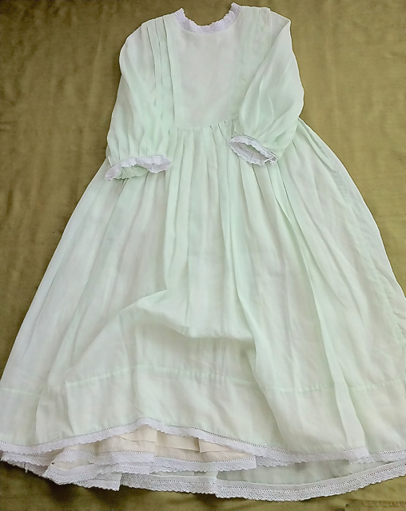

Green Ramie Linen Dress
- Description: High round neckline. Three-quarter length sleeves. Calf-length. High waistline. Very full pleated two layer skirt. Two layer fabric construction for bodice. Generous hem. Cotton lace trim at neck, sleeve edges and hem of both skirt layers.
- Fabric: 100% Ramie Linen with 100% Cotton lace trim.
- Care: Machine wash cold, hang to dry, iron if needed.
- Price (USD): $448
previous dress
next dress